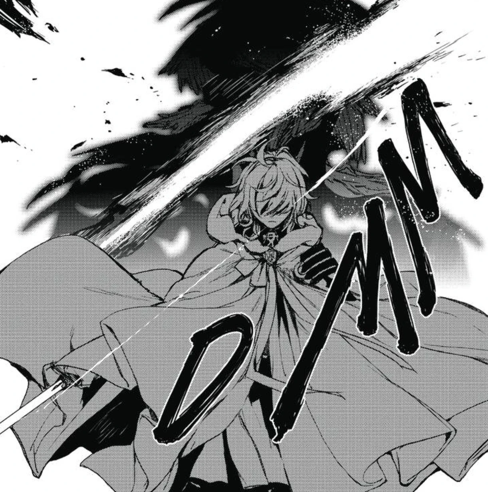

Owari No seraph
Owari no Seraph (終わりのセラフ Owari no Serafu?, lit. El Serafín del fin), también conocida como Seraph of the End: Vampire Reign, es una serie de manga de fantasía oscura escrita por Takaya Kagami e ilustrada por Yamato Yamamoto. Es publicada en la revista Jump Square de la editorial Shūeisha desde 2012. Ha sido licenciada para su publicación en Estados Unidos por VIZ Media, en su revista Weekly Shonen Jump Alpha. La historia está ambientada en un mundo donde un virus ha devastado a la mayor parte de la población mundial, dejando solo vivos a los niños menores de trece años. Durante dicho suceso surgen de las profundidades de la Tierra vampiros y otras criaturas. Un joven, Yūichirō "Yū" Hyakuya, vive para matar a los vampiros que asesinaron a casi todos sus compañeros de orfanato.
La adaptación a serie de anime por parte de Wit Studio fue anunciada el 28 de agosto de 2014. La primera temporada comenzó su transmisión el 4 de abril de 2015 y finalizó el 20 de junio de ese mismo año. La segunda temporada comenzó el 10 de octubre y finalizó el 26 de diciembre de 2015. Una serie de novelas ligeras centradas en el superior de Yū, Guren Ichinose, ha sido escrita por Kagami e ilustrada por Yamamoto.
Argumento
En el año 2012, el mundo llegó a su fin a causa de un letal virus de origen humano, el cual aniquiló a casi toda la especie humana con la excepción de los niños menores de trece años. Al mismo tiempo, los vampiros emergieron de las profundidades de la tierra y se establecieron como la raza dominante. Estos ofrecen seguridad a los supervivientes a cambio de subsistir mutuamente ofreciéndose como ganado, es decir, donar sangre voluntariamente. Cuatro años después de estos sucesos, Yūichirō "Yū" Hyakuya y su amigo Mikaela planean escapar del dominio de los vampiros junto a los otros niños del Orfanato Hyakuya. Sin embargo, el plan termina en una masacre y todos ellos son asesinados, mientras que Mikaela se sacrificó con el fin de que Yūichirō escapase. Al escapar, Yūichirō es acogido por los miembros de la Compañía Demonio Lunar, una unidad de exterminio parte del Ejército Demoníaco Imperial Japonés. Otros cuatro años más tarde, Yūichirō se dedica a luchar contra los vampiros con sed de vengar a su amada familia.
Personajes principales

Página creeada por Valentina Vargas Sánchez